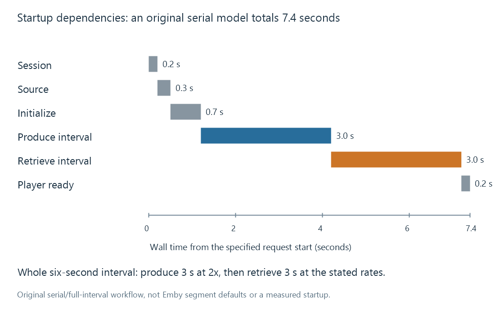

Playback startup delay
Playback startup delay is the wait before useful presentation, produced by the session’s control, resource, processing, delivery and player-readiness dependencies.
Startup delay is the wait before the viewer receives useful picture and sound. It includes dependencies that a steady encoding-speed number does not describe.
The measurement also needs endpoints. Time from pressing Play to the first presented picture differs from time from the first media request to its first received bytes.
Name the measured interval
| Endpoint | What it observes |
|---|---|
| User requests playback | The viewer's initial action |
| Session plan becomes available | Control/selection work has progressed |
| First media bytes arrive | Delivery has started |
| First decodable picture is ready | Codec/input dependencies are satisfied |
| First picture is presented | The player has scheduled visible output |
Those milestones can be separated by input access, initialization, processing, buffering or player state. A request that has returned successfully does not, by itself, establish that a picture has been shown.
An original store-and-forward example
Assume this deliberately serial workflow:
| Work before presentation | Assumed wall time |
|---|---|
| Session control | 0.2 seconds |
| Source access/inspection | 0.3 seconds |
| Processing initialization | 0.7 seconds |
| Produce one six-second output interval at 2x | 3.0 seconds |
| Retrieve its 36-million-bit payload at 12 Mbit/s | 3.0 seconds |
| Initial player decoding/presentation preparation | 0.2 seconds |
The total is 7.4 seconds.

The example assumes 6 Mbit/s output and a whole-interval dependency. It is not a claim that Emby always waits for six-second segments or serializes those stages.
Another path can overlap production and retrieval, expose usable data earlier, or need a different initial reserve. Those changes alter the dependency chain rather than contradicting the arithmetic.
Steady speed does not erase initial work
The producer in the example runs at 2x. It still needs initialization and the stated first-output interval before the next dependency can begin.
A pipeline can therefore start after a noticeable wait and then maintain a comfortable lead. Conversely, a quick first frame can be followed by stalls if sustained arrival cannot keep up.
Codec look-ahead, reference-picture requirements and output-container information can contribute to initial readiness. The exact contribution depends on the represented streams and implementation.
Cold and warm observations
A first request may need source opening, inspection or another cache-dependent operation that a later request can reuse. Comparing a cold request with a warm one changes more than elapsed time.
A useful test records that state. A repeat becoming faster is evidence about the repeated context, not proof of one specific cache mechanism.
A changed audio/subtitle choice can also alter the planned work. “The same movie started faster” is incomplete without the source, tracks, client and requested position.
The player has its own start conditions
The player can wait for data, decoder/output initialization or another readiness condition. The server cannot infer all those conditions merely from having written output.
A seek can create a similar dependency chain at another point in the programme. Seeking distinguishes destination readiness from the original startup interval.
See Also
- How a transcoding pipeline works
- Buffering, ready media and playback reserve
- Real-time transcoding and playback deadlines
- Reading Emby playback information
- Reproducing a media playback problem